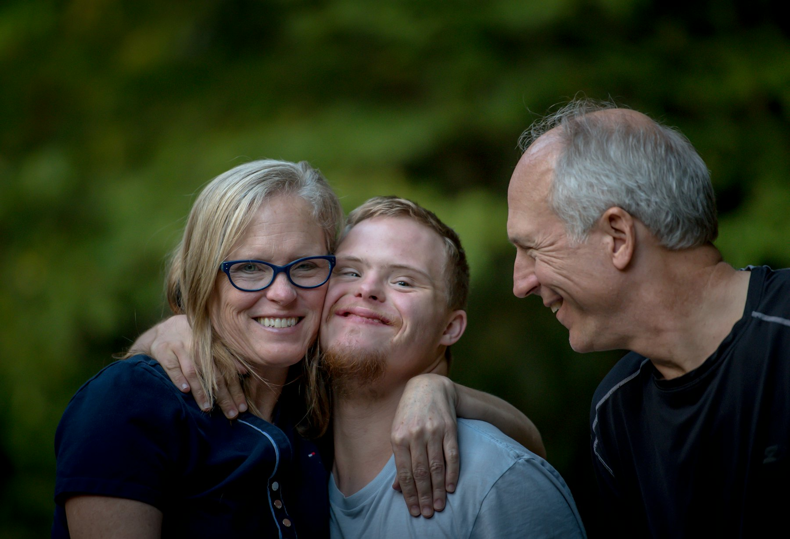
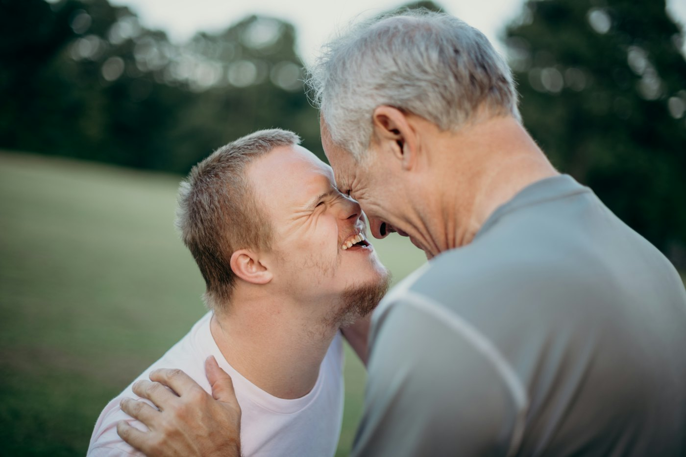

Missão
Apoiar as pessoas com Deficiências Intelectuais e do Desenvolvimento e as suas famílias, visando a integração social e comunitária, de acordo com a Convenção dos Direitos das Pessoas com Deficiência.
A AADID nasceu em 2012, no Porto, da preocupação de pais e técnicos com o futuro de jovens adultos com Deficiências Intelectuais e do Desenvolvimento.


Sobretudo para quem tem deficiências graves e de caráter permanente. Esta continua a ser uma das grandes preocupações das famílias e da comunidade.
Investem-se enormes recursos no apoio escolar destes jovens, dos 3 aos 18 anos. Depois, a muitos é negada a continuidade de um projeto de vida ativo, de qualidade e de inclusão. As competências regridem e as famílias ficam desamparadas no dia a dia.
Foi para responder a isto que um grupo de técnicos e pais criou a AADID.
Apoiar as pessoas com Deficiências Intelectuais e do Desenvolvimento e as suas famílias, visando a integração social e comunitária, de acordo com a Convenção dos Direitos das Pessoas com Deficiência.
Que cada jovem adulto com DID tenha, depois da escola, um projeto de vida ativo, com qualidade e incluído na comunidade.
Inclusão, dignidade, proximidade às famílias, solidariedade e rigor na gestão.
Promover a integração familiar, social e comunitária das pessoas com DID.
Responder às necessidades básicas de vida e de integração social das pessoas com DID e de quem cuida delas.
Através do CACI e da Unidade Terapêutica, e no futuro do Lar Residencial.
Direção, Assembleia Geral e Conselho Fiscal.
Abrir →Atividades e contas de cada exercício, de 2013 a 2025.
Abrir →Planos de ação e orçamentos anuais.
Abrir →Estatutos, regulamento interno e proteção de dados.
Abrir →Estrutura da associação e das suas respostas.
Abrir →Fale connosco sobre a associação, as respostas ou os documentos.
Contactar →